I should start by issuing fair warning: this is a post I’ve been meaning to write in some form or another for the better part of the last 15 years.
Commence “old mang” jokes.
But there was a group of gamers I met many years ago who, to this day, remain some of my best friends. We don’t keep in near-daily contact like we used to, but it doesn’t take more than a couple friendly jabs to pick up right where we left off. Particularly at a time when I feel very alien and removed from the gaming community, both by virtue of stage of life as well as events of late, I want to hold up a sliver of the gamer’s experience that, at least for me, was phenomenally positive and formative.
Jedi Outcast
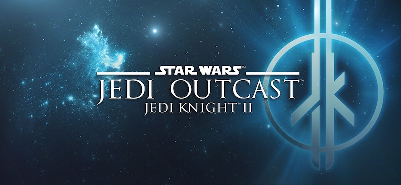
The entire story essentially revolves around a video game: Jedi Knight II: Jedi Outcast. But while this seemingly-innocuous run-of-the-mill Star Wars game was the central impetus, its unique properties–which I can honestly say haven’t been replicated in more recent games–gave rise to a community that still impacts me to this day.
Jedi Outcast, colloquially referred to either as “JK2” or “JO”, is a first-person shooter that continued the adventures of Kyle Katarn started in the original Dark Forces and carried forward in Jedi Knight. It was, far and away, the finest installment of the series.
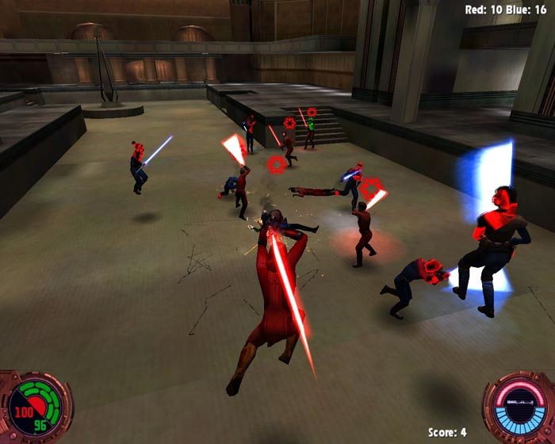
JO came with a single-player campaign that involved an attempt by a fallen Jedi to harness Force energy in order to artificially infuse his warriors with the Force, essentially creating dark Jedi on-demand. It was quite engaging! But the real novelty, and probably the most unexpected success, was the multiplayer.
I mentioned before it had some unique properties that gave it its staying power. Among others, and in no particular order:
- It was the first game in the series to feature truly immersive lightsaber mechanics. Dark Forces II had introduced lightsabers, but to wield it was essentially like watching a monkey hit something with a stick. JO made it look like it came out of a movie.
- The Force powers were also considerably better-integrated with gameplay. Again, Dark Forces II had pioneered Force powers, but they were clunky in their use; in fact, you could beat the single player without ever using a single one. JO seamlessly wove their use into the game.
- The developers open-sourced the server-side JO code almost immediately after release, prompting the explosion of a modding community around the game, building everything from new in-game characters to new multiplayer maps to entire server mods.
- The multiplayer enabled what we affectionately referred to as a “chat room with a GUI”: an environment where players could shoot and duel, but also literally stand around talking.
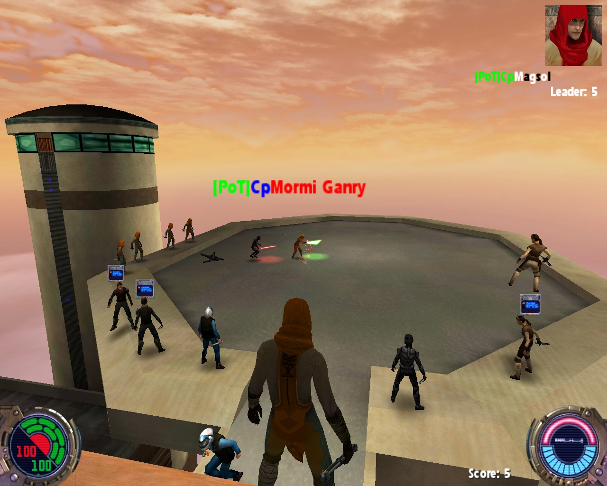
In the picture above, the dark text boxes you see above some players heads are the tell-tale indicators that the player is typing a message. Meanwhile, battle can literally rage around them.
All this gave rise to an environment conducive to the formation of “gaming clans”: communities of fellow gaming nerds who enjoyed the game and the people in it. Numerous clans popped in and out of existence, with as many varieties of names and purposes and values as individuals on the planet.
Here’s where I entered into things: my story begins in the fall of 2003, when I was just starting my first semester as a freshman at Georgia Tech.
Fall 2003
I’d been the proud owner of a JK2 CD-ROM for a year or so at that point, but hadn’t had a desktop powerful enough to play it. Now, armed with a brand-new Dell Optiplex with a 3GHz processor and 4GB RAM, I had enough horsepower to give the game a test drive.
Oh yeah, and also study Computer Science at one of the finest institutions for the field in the world. But I digress.
I devoured the single-player JO campaign, loving every minute of it. But when it came to the multiplayer, I was very hesitant. I remembered all too vividly the frantic competitiveness of multiplayer StarCraft from high school–I’d been ranked in the Top 1000 at one point, but pretty much to the detriment of my sanity–and really didn’t want to get similarly sucked into an anxiety-inducing hyper-competitive environment where, at the end of the day, all I had to show for my hours sunk into the game was a migraine.
Well, I could say one thing for sure: I was nowhere near as good at the multiplayer as I’d thought I was from the single-player. I got my ass handed to me. A lot. But another thing I quickly learned: the vast majority of the folks playing this game were chill. The whole “chat room with a GUI” thing.
Soon, I fell into an online clan, called “Imperial Forces”. But my courtship with the clan was extremely brief: evidently, any bad clan can have one decent person in it, and after a very short membership–maybe a week?–I departed its ranks.
And discovered the “Power of Thee.”
Yes, it was indeed “cleverly” titled to invoke a particular acronym. But beyond the name, it was the people: every single one of them was both super-chill and super talented. I could tell there was considerable variation in age, both younger and older than me, but they were wholly welcoming. And so freaking good.
Lucky for me, they recruited me. But like any good Jedi organization, new recruits–apprentices–are assigned a master. My master was a veteran of JO, a Knight named Kaleb. He helped me learn the intricacies of the game, as well as the “protocols” that had arisen around the GUI-ified chat room of JO, things like
- If someone has a chat window above their head, don’t attack them
- With great [admin] power comes great responsibility
- Don’t take things too seriously, otherwise you’ll get C4’d
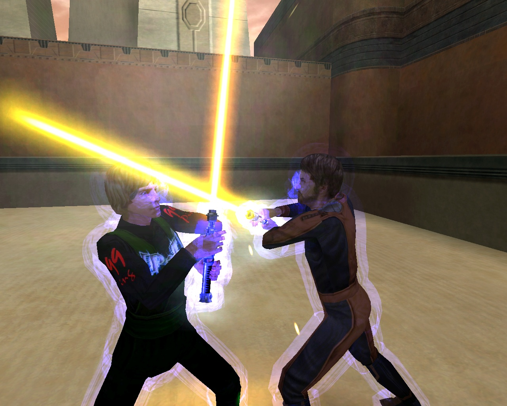
At some point, I was deemed ready for my “Trials”. Apprentices such as myself pass their Trials and become full members of the clan by winning at least 4 out of 6 lightsaber duels with Knight-level members or higher. I don’t remember my exact record–I don’t mean to toot my own horn, but it very well might have been 6-0 (Kaleb was a great teacher!)–but I passed my Trials and was duly Knight-ed into PoT.
Spring 2004
To provide a bit of context: JO was released in 2002. So right as I was hitting a stride with my new clan and actually git good at multiplayer, the game had already been out for over two years. And on the “clan” scene, two years is an eternity. There were senior members of PoT–the “Council” members, including the original founders–whom I’d never met because they’d already moved on, essentially having gone permanently inactive. The active membership–Knights who’d passed their Trials and made up the bulk of the active membership, and Jedi Masters who were promoted from Knight by virtue of some outstanding contribution to the clan–kept things fresh by recruiting new talent.
But the gears of time ground on. Spring 2004 was a particularly rough time for me personally, as I settled into my second semester of college and I was caught somewhere between who I’d been in high school and who I wanted to become as I moved into adulthood. My roommate, a dear friend from high school, was also going through some really hard times and ended up dropping out halfway through the semester, so I ended up being alone more often than not.
At the risk of sounding melodramatic, JO and PoT was an anchor; I was getting to know my fellow clanmates better, chatting with them directly over AOL Instant Messenger instead of exclusively through JO. Getting to know them as people, rather than avatars. Sharing experiences. It… helped. In more ways than I can recount, even now.
But that anchor was shifting in ways I hadn’t been around long enough to realize.
Summer 2004
In many ways, this was one of PoT’s strongest seasons. In others, it was almost its end.
I’d (somehow) secured an internship at an Atlanta-based supply-chain company, but because they had no idea what they wanted me to do, I found myself with a lot of free time.
So I exercised some of the new network connections I’d made through JO and organized an inter-clan match: a day-long competition between PoT and They Might Be Jedi, or TMBJ.
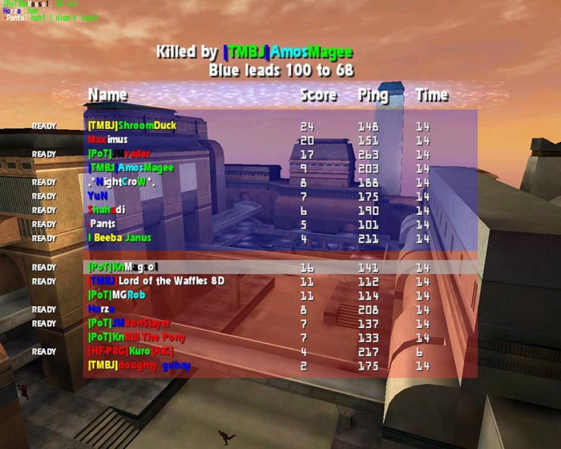
TMBJ was the JO clan. Everyone wanted to join them, and failing that (which was often), wanted to be them. They were kind, they were competitive, and they were good at everything. Their most famous member went by the handle “ShroomDuck”, and he was a singularly talented individual who was equal parts charming in person, deadly with a lightsaber, and wicked talented with JO modding tools, Photoshop, and web design.
Basically, a bit of a personal hero at the time. So, I submitted a challenge to TMBJ through him and on behalf of PoT to engage in a bit of well-mannered duels to the death.
Guess what? We won!
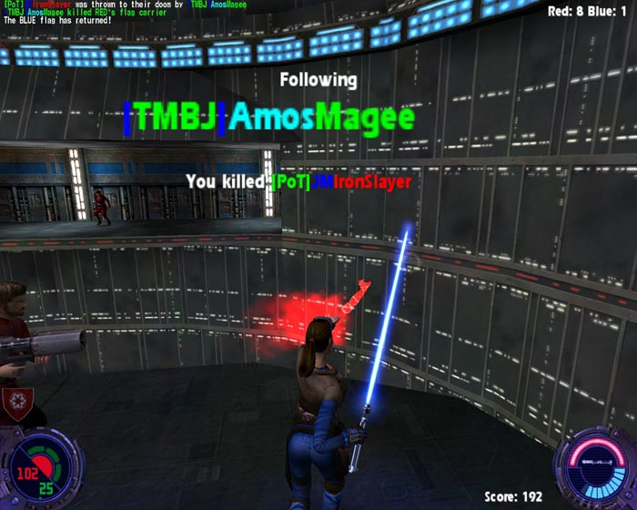
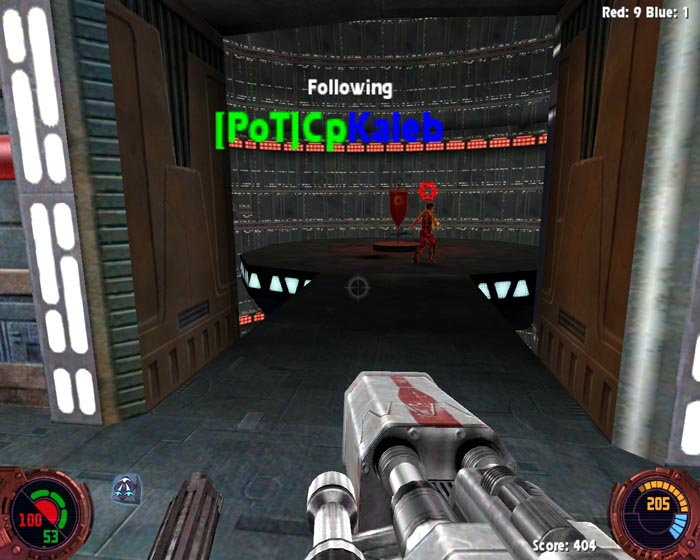
TMBJ was stacked with talent, but somehow our own cohesiveness and teamwork–led by the inordinately talented likes of IronSlayer, Bill the Pony, Rob, John, Vader, and my master Kaleb–bested the JO juggernaut that day.
Then, mere weeks later, it all came crashing down: pretty much every one of those individuals announced that, for various reasons, they were leaving. We all knew it wasn’t coincidence they were all leaving at the same time, but as I was still a Knight at the time and not privy to the discussions of the Council (to which Kaleb had been promoted since), I didn’t have any details.
Suddenly, we were a shell of ourselves: the 5-6 people who comprised a good 75% of the clan’s activity were gone.
I’ve been told before–by coaches, by therapists, by parents, and by my wife–that I don’t know how to quit. It’s not always meant as a compliment, either; there are times when you really should cut your losses and walk away. I’ve learned how to do that more as I’ve gotten older, but suffice to say, my 19-year old self knew little to nothing of that skill.
So I dug in. Over the next several months, I configured my own server to use for PoT (IronSlayer had run our local server until then), helped revamp the clan website, and advertised the clan whenever I was in-game. I sought out contacts I’d made in-game and brought them to our servers, increasing the baseline activity level that would attract more new blood. I relentlessly badgered the shattered Council with ideas, initiatives, and new recruits, insisting the new blood was there if I could just have permission to recruit them.
Fall 2004
To their credit, after the initial shock wore off (and with some prodding on my part), the Council got down to work. I was quickly promoted to Jedi Master, and in short order, instated on the Council to fill the open seats left by the departures of the previous season.
Kaleb had a made a 1-year anniversary graphic back when he’d still been in the clan, so I followed suit as both a tribute to someone who’d taught me everything and also as a nudge to everyone else that I wasn’t going anywhere, and neither should they.
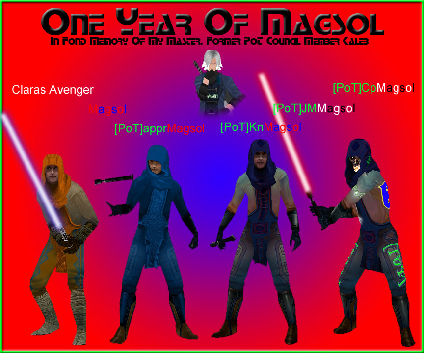
Yes–I even learned from Kaleb how to make custom player skins. I wasn’t nearly as talented as he was, as I basically applied minor tweaks to a default built-in skin, but I was awfully proud of the “PoT” shoulder and thigh logos, the shamrocks on the calves, the lightning bolt across the chest, and the giant “69” emblazoned on the back.
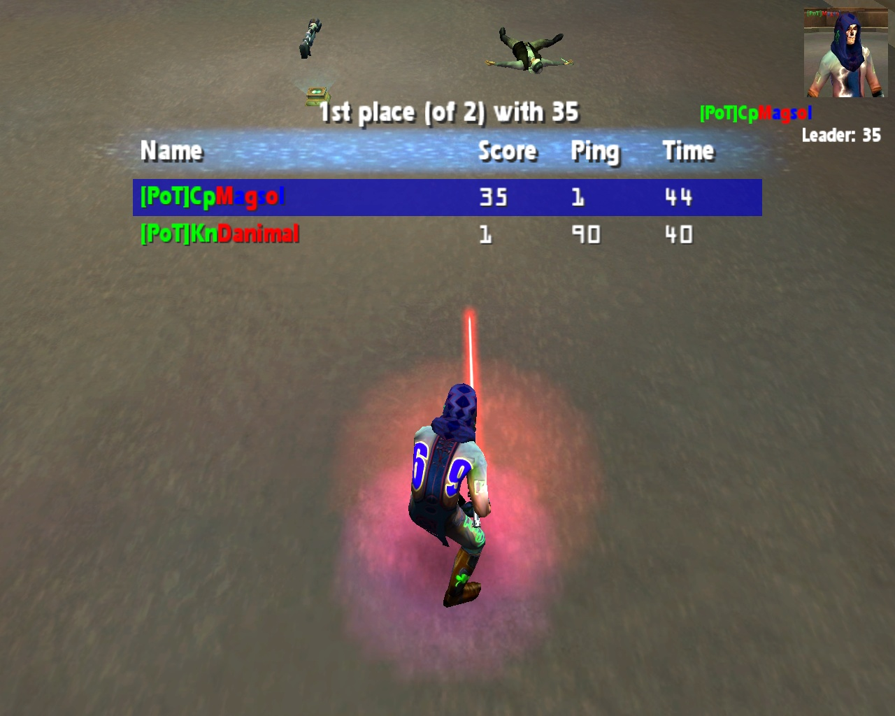
Our ranks started swelling again. Too fast on occasion, even; we had to shut down recruitment at times in order to fully process applications and keep some semblance of order on our servers. Some of the best friends I made through PoT either appeared during this time, or the circumstances were such that an acquaintance deepened into a friendship.
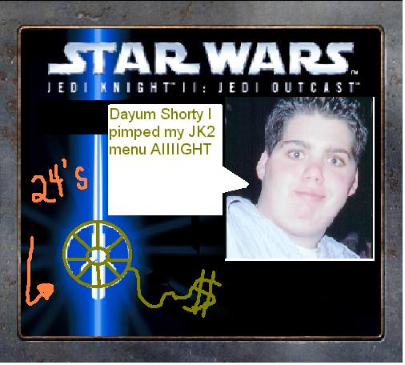
Rob was this way: a total goofball who was one of the best “gunners” (term for a JO player who preferred the point-and-shoot weapons to lightsabers) I’d ever encountered. To the casual observer, he and I appeared almost as opposites: I was all about structure and regimen; he just wanted to shoot at something and crack jokes. But when we were both promoted to the Council in the wake of the summer departures, against all odds we worked extraordinarily well together, our differing styles complementing each other and resulting in a friendship that endures to this day.
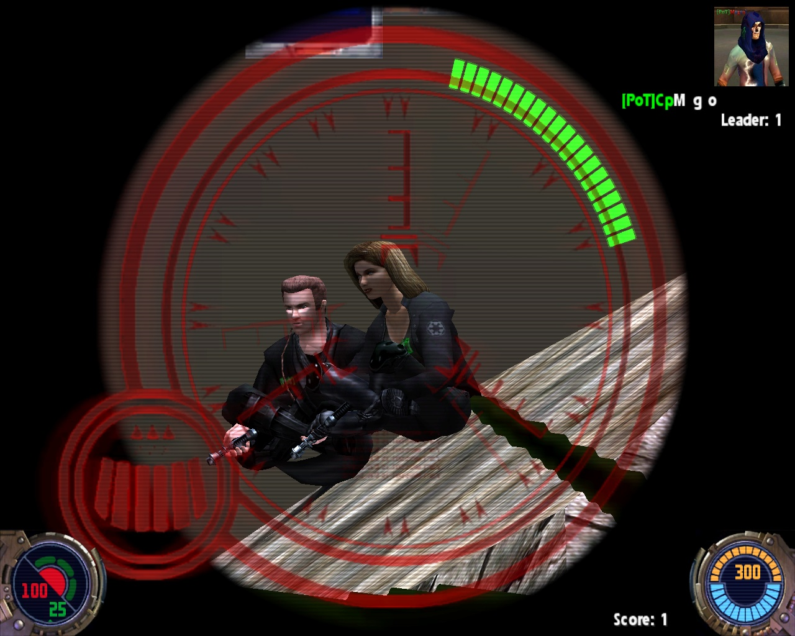
Tahiri was another. He always kept a veil of secrecy around him, in no small part because his in-game avatar was female (his name “Tahiri” follows an Extended Universe character by the same name, who is female as well). But over AIM I learned he was a mere year older than I was, and as we worked closely to keep PoT alive in that summer and fall of 2004, we forged a relationship similar to the one I had with Rob, with the roles reversed: I kept him from being too rigid, and he kept me from being too slapdash.
2005
We continued recruiting, and I even managed to snare my literal Best Man, The Danimal.
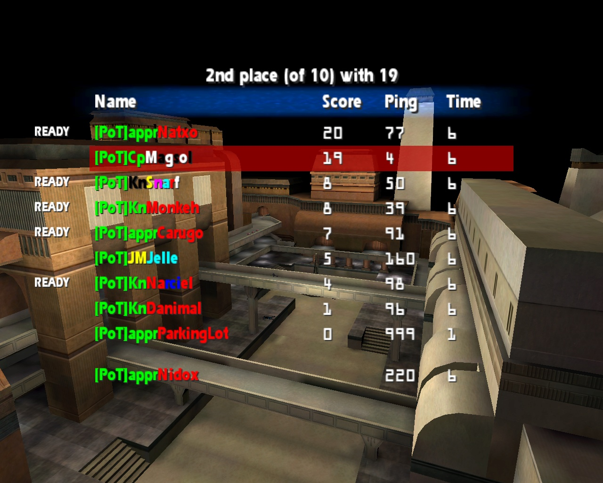
Our renewed membership enabled us to engage in more inter-clan matches. We even managed to win a few of them!
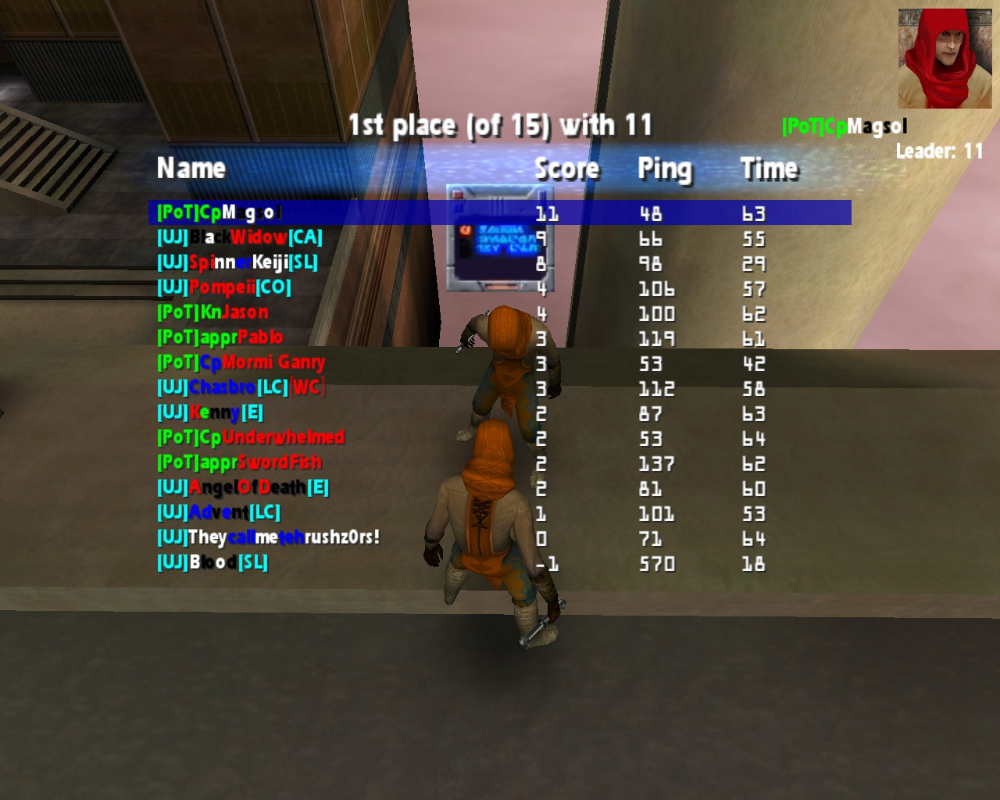
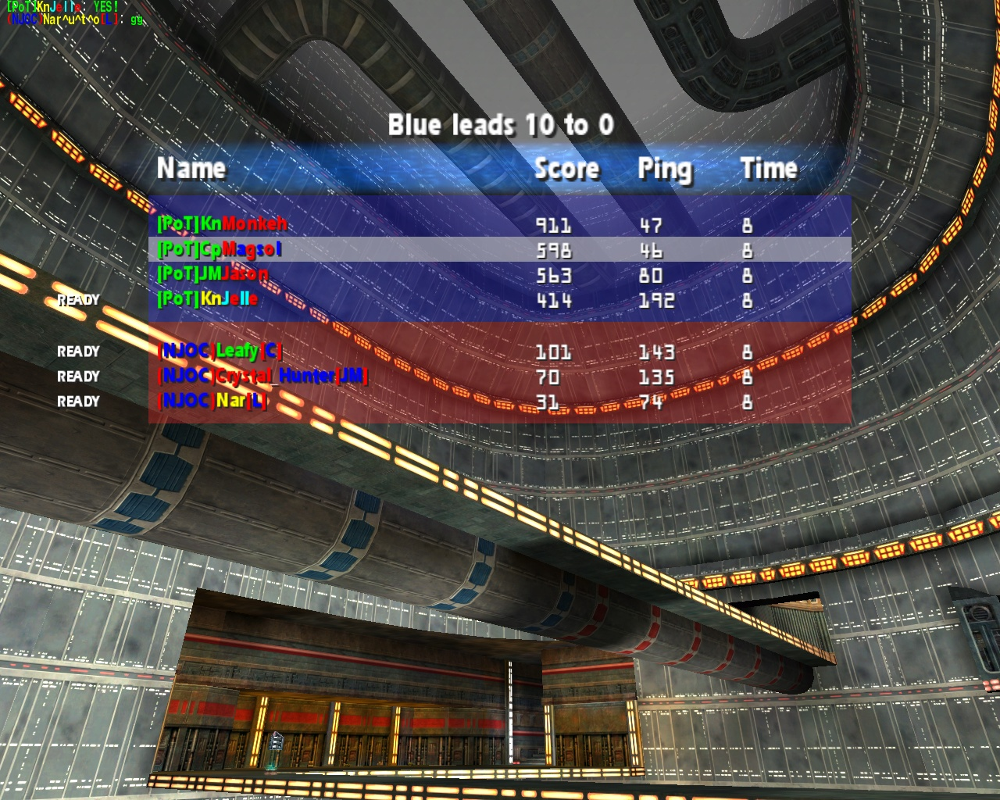
I do want to mention something here, given Kaleb brought it up in his blog post some months ago: the Delta Order.
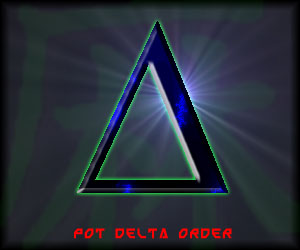
In the intervening months after the departures of mid-2004, it was clear–especially from the matches–that PoT was seriously lacking in gunning talent. Rob was still among the best I’d ever seen at any point in the game, but if he wasn’t around, we really had nobody who could even come close to matching his play level. I was getting better, but again we really didn’t have anyone else who was a pure gunner.
Delta Order was an attempt to remedy that: Rob and I would work together to groom younger members who demonstrated a knack for gunning to be the next Rob, essentially. It wasn’t meant as a super-secret infiltrate-clans-from-within, CIA-like operation. Admittedly, we could have just as easily had a regular low-key practice session for anyone who wanted practice shooting things, but we thought this might make it more “official” and interesting to the younger players if they got a cool logo to go with their training efforts.
It worked, somewhat: we trained Monkeh into one of the finest gunners in the clan (outside Rob, of course), and brought a lot of other players’ skills more into parity with the general audience of the game. It was partially thanks to the Delta Order that we ended up winning the aforementioned match against NJOC.
2006
At some point, we started organizing intra-clan matches in the form of summer tournaments. These were a blast!
We made entire brackets, and organized two separate double-elimination tournaments: one with best-of-three lightsaber duels, and the other with first-to-15-kills run-and-gun duels, appealing to the two flavors of JO player.
The response was overwhelming, and was a huge boost to the clan. Though to this day, I’m stll not sure how Rob of all people won the lightsaber competition. I think I just forgot to fill out the rest of the other bracket, but am pretty sure that was the year Rob won both competitions. WTF?
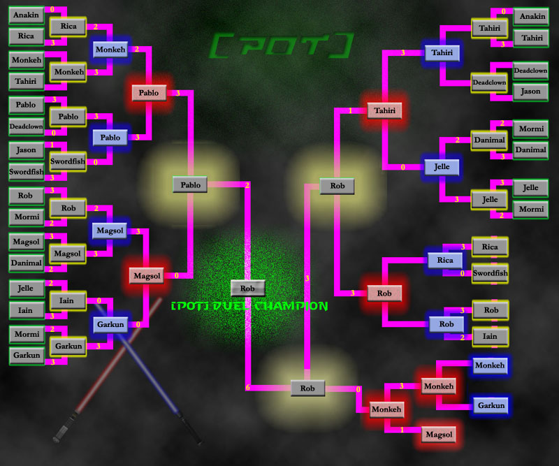
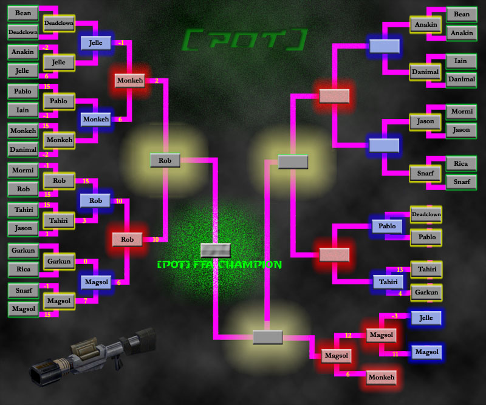
Somewhere in here, I colluded with a couple of my friends in PoT to stage an April 1 trick where we would all announce our immediate retirements from PoT. Tahiri wasn’t pleased. Note the shift as he starts with sheer panic, then later after reading an “April Fool’s!” follow-up post, shifts to relief with some good-old-fashioned ribbing.
We were having a lot of fun. I’m glossing over a lot–there was intra-clan drama, clashing of personalities, and the Council (myself included) made a lot of noob mistakes in handling them–but for all intents and purposes, the clan was humming along.
2007
For all practical purposes, this is where my role in PoT–after a solid four years–started waning. I was entering into the last year of my undergraduate studies at Georgia Tech and eyeing graduate school, was in a serious relationship that I was trying to convert from long-distance to short-distance, and JO was really starting to show its age: fewer new players were appearing, and more experienced hands were leaving. While we still technically had a full complement on the Council, only three of us–Rob, Tahiri, and myself–were still active in any meaningful capacity. Our Jedi Master ranks were pretty thin, and while we had many active Knights, our apprentice prospects were drying up.
In short, it was time to start having difficult conversations: PoT, at least in its current form, wasn’t going to last forever. And that end was looking to come sooner and sooner.
In the months that followed, a lot of options were thrown out, from continuing as we were to converting into a less formal “gaming community” (TMBJ had followed this route, having given up its JO-specific branding over a year prior) to disbanding entirely. None were particularly appealing; we didn’t want PoT to simply disappear, but our leadership was aging; I knew I couldn’t invest the kind of time and effort in revamping PoT that I’d put in back in mid-2004.
In short: this was one of the first lessons I learned in walking away. But, in classic “me”, it wasn’t because I came to some incredibly-wise decision to that effect, but because I was slapped in the face with the right decision.
At some point, we made the decision to convert to a “gaming community” that had affiliations with multiple games, including JO, but also: Battlefront, StarCraft II, and even Left 4 Dead 2. We had a ranking system set up, and a representative “Senatorial” ambassadorship for each game. The clan seemed on board.
And then simmering egos exploded, and it became clear: we’d made the wrong decision. We quickly changed course, and decided it was time for the venerable PoT experiment to end. In our naive excitement to keep PoT alive, we ignored very real structural problems in the membership that had not been addressed.
Postscript
Even now, I struggle for words to encapsulate everything the Power of Thee taught me, from making my own character skins; configuring and administering dedicated servers; hacking the shit out of Photoshop to make halfway-decent signature graphics; glitching JO in precisely the right way to grab the Flechette launcher through the floor; bunny-hopping; @@@@@@@@@@@@@@@@@@@@-ing.
But even more important, and less amenable to precise wording, is the relationships I made and continue to learn from.
- Kaleb, who I don’t speak to nearly often enough but really taught me everything I know, and even though we disagreed on some things in the end I still have the utmost respect for; he fights for who he loves, and that’s a kind of interpersonal honor that is rare these days
- Underwhelmed, who selflessly hosted our forums for years, and until I lost touch with him was a kind of unofficial mentor; I hope he’s still rescuing tacos and giving them safe haven in his stomach
- Mormi Ganry, a fellow tech guru whose commitment to always doing the right thing was above reproach; of course, this included that amazing instance when he managed to upload Linksys router firmware onto the open admin console for an unsecured D-Link router that belonged to a troll on our server…
- Rob, who despite (or because of?) his incessant in-game trash-talking, was one of the most honest and heartfelt individuals I’d ever met
- Tahiri, who was my conscience on more than one occasion, and my instructor on many others, and who helped me through relationship issues during my formative years
- Jelle, a fiercely loyal friend who I actually visited in Belgium during my 2007 study abroad, and who I also don’t speak to nearly often enough, but who also kept me honest when we disagreed on multiple different fronts
- Xixes, who was the quintessential “PoTnah”: always available to help anyone who might need it, always willing to lend a hand, always happy to jump into a clan match even if he knew he wasn’t the right person for the job; he’d give it everything he had
- SwordFish, a Canadian with a wicked hilarious sense of a humor and endless capacity for friendship who I have since sadly lost touch with
- Monkeh, an often-controversial individual who spoke almost exclusively in l33t-sp34k, who didn’t care if he rubbed you the wrong way, and who turned into an exceptional gunner, but whose dedication to PoT and its leadership was never in question
- Iain, a quiet and polite member whose unassuming disposition masked a clever wit and incredibly sharp intellect, and especially technical talent, that led us to grant an overdue post-PoT promotion to Jedi Master
…and many, many others: Vader, John, Bill the Pony, IronSlayer, Pablo, Jason, Anakin, Chrury, Deadclown, Rica, Secca, Snarf, Ragnarok, SeparateWays, and plenty others whom I’m forgetting or never knew that well.
Suffice to say, the clan–really, the people in it–were instrumental in making me into who I am now. I use a lot of the same leadership strategies in my day job, mentoring and instructing new students and training them into researchers; working through personnel conflicts and managing competing egos; and somehow making sure I have time to keep my own skills up to par with the playing field at large. In retrospect, it’s amazing how such an otherwise run-of-the-mill FPS could have had such an outsized impact on me, but I’m eternally grateful for it, and hope only that I can continue to learn from it.
Once I find where Tahiri went.
Citation
@online{quinn2018,
author = {Quinn, Shannon},
title = {Jedi {Outcast:} {Echoes} of a Bygone Gaming Era},
date = {2018-04-26},
url = {https://magsol.github.io/posts/2018-04-26-jedi-outcast-echoes-of-a-bygone-gaming-era/},
langid = {en}
}